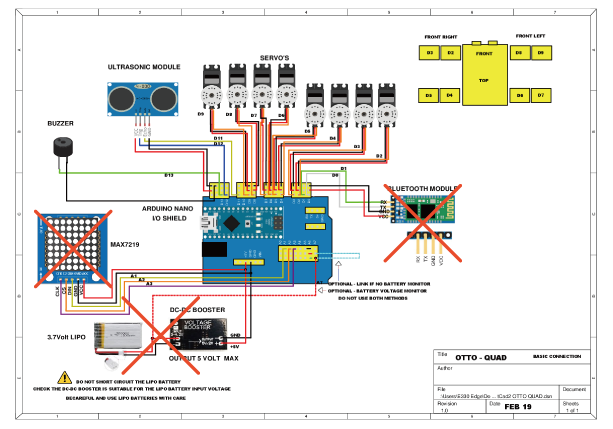
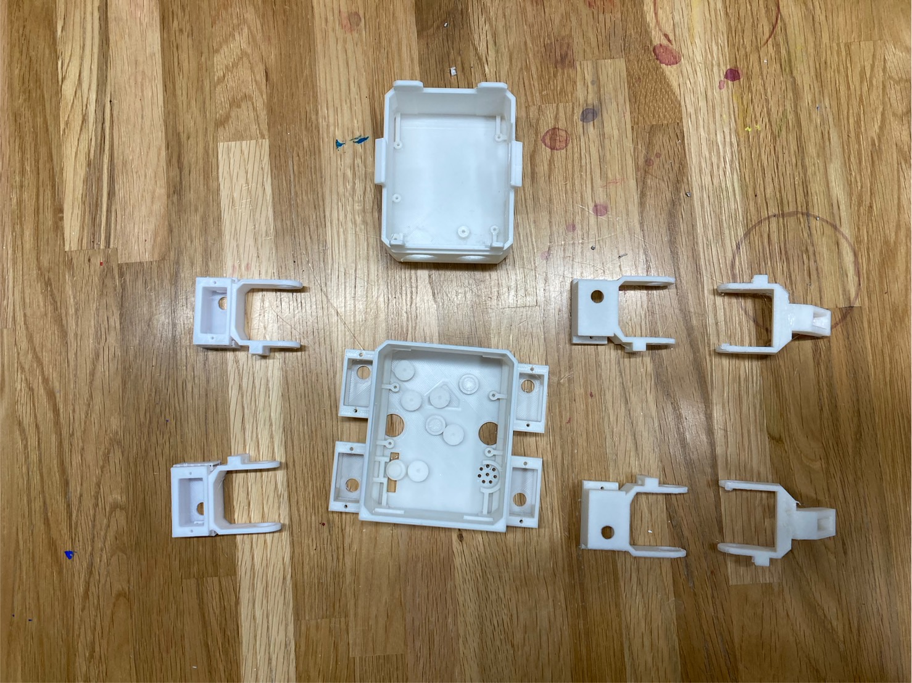

Otto
はじめに
すこし仕事で機会があったのでOttoのDIY Quadruped robotを作る工程をここに掲載していきたいと思います。
ほかにもOttoにはキャタピラ型やホイール型、人型など様々な種類があります。主なボディパーツは3Dプリンターで出力できますが、中のArduinoなどの内部パーツはOtto DIYのホームぺージから購入する必要があります。
機能のオミットについて
本来、このモデルのOttoにはBluetooth機能やリチウムイオン電池などが内蔵されていますが、今回は一部の機能をオミットしようと思います。
まず、BluetoothとLEDの感情表現機能をオミットし、リチウムイオン電池を単三電池3本分に代替します。配線図は以下となります。

部品を3Dプリントしてみる
それでは部品を3dプリントしてみます。部品はそれぞれhead,body,hips,legs.pinsの5パーツに分かれていて、基盤にプログラムを入れ込んだうえでそれぞれに電子部品を組み込み、組み立てることで完成します。

プログラム
- #include <setjmp.h>
- #include "OTTOKame.h"
- jmp_buf jump_env;
- // Ottoのインスタンス
- Ottokame robot;
- // グローバル変数
- int MODE = 0; // モード: 0 (待機), 1 (ダンス), 2 (障害物検知), 3 (音検知)
- const int PIN_Buzzer = 13; // ブザーのピン
- const int CAL_TRIGGER_PIN = 12; // キャリブレーション用トリガーピン
- bool obstacleDetected = false; // 障害物検知フラグ
- // 設定関数
- void setup() {
- Serial.begin(9600); // シリアル通信を開始
- robot.init(PIN_Buzzer); // Otto ロボットの初期化
- robot.reverseServo(2); // サーボモーターの設定
- pinMode(CAL_TRIGGER_PIN, INPUT_PULLUP); // キャリブレーションピンを入力モードに設定
- // キャリブレーション
- while (digitalRead(CAL_TRIGGER_PIN)) { // トリガーピンが HIGH の間
- robot.home(); // 初期位置に戻る
- delay(100); // 少し待機
- }
- }
- // メインループ関数
- void loop() {
- switch (MODE) {
- case 0: // 待機モード
- break;
- case 1: // ダンスモード
- int randomDance = random(5, 15); // ランダムなダンスコマンドを生成
- robot.home(); // 初期位置に戻る
- gaits(randomDance); // ダンス動作を実行
- break;
- case 2: // 障害物検知モード
- robot.run(0); // 前進
- obstacleDetector(); // 障害物検知を実行
- if (obstacleDetected) {
- robot.home(); // 障害物が検知された場合は停止
- delay(500); // 少し待機
- }
- break;
- case 3: // 音検知モード
- break;
- default:
- MODE = 0; // 待機モードにリセット
- break;
- }
- }
- // 動作関数
- void gaits(int cmd) {
- switch (cmd) {
- case 1: robot.run(0); break; // 前進
- case 2: robot.run(1); break; // 後退
- case 3: robot.turnL(1, 550); break; // 左回転
- case 4: robot.turnR(1, 550); break; // 右回転
- case 12: robot.dance(1, 1000); break; // ダンス
- }
- }
- // 障害物検知関数
- void obstacleDetector() {
- int distance = robot.getDistance(); // 距離を取得
- obstacleDetected = (distance < 15); // 距離が15cm未満の場合、障害物ありと判断
- }